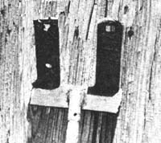
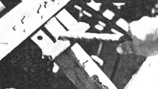

Recently-while banging away with a hammer at the laths of a barn I was disassembling-an old sharecropper (one of rural America's many undiscovered geniuses) happened along and showed me a simple homemade lath puller he'd devised. The tool-which was made from a few pieces of scrap iron (the kind most homesteaders have lying around somewhere)-really speeded up the work. I later made one just like it myself.
If-like me-you spend a fair amount of time tearing down old houses and barns for their lumber, perhaps you ought to consider making one of these lath puffers too. All you need are [1] a two-foot length of one-half- to one-inch-diameter steel rod or pipe, [2] three flat pieces of iron each measuring about six inches by two inches by a quarter of an inch, and [3] access to a welding rig.
First, weld the end of the rod to the center of one piece of strap iron, forming a "T". Then weld the two remaining pieces of metal to the top of the "T" at about a 45° angle in the manner shown in the accompanying photographs. Leave a good 2-1/2" between the two prongs so that they'll easily straddle a two-by-four.
To use the puller, simply place the two prongs underneath a lath and rest the crosspiece of the "T" on the beam to which the lath is attached (as shown in the picture). Push down on the handle, and the prongs will pry the lath loose ... no muss, no fuss, no broken slats.
Continue this procedure from one end of the strip of wood to the other until it's completely free.
You'll find that the puller-besides speeding up the job-rarely splits laths (unlike a hammer). Thus, you end up with more usable lumber at the end of the day!
Incidentally, those laths I pulled with the help of the sharecropper's tool now form a rustic fence around my garden. With the many shingle nags still in the wood, the fence is a doubly-effective deterrent to cattle.
|
 |
 |
|